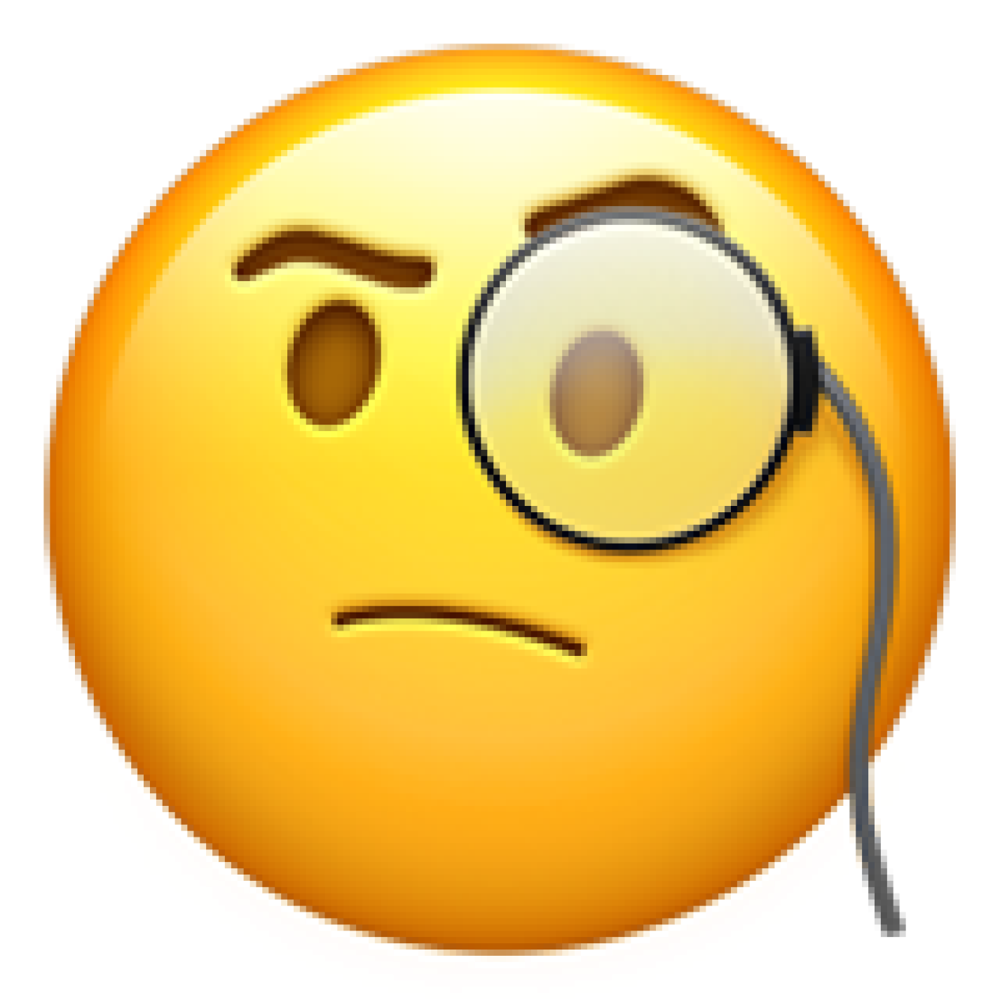

2025-2026年度 部分工作作品集
My background, education, and credentials.
Hi, ;)
Here is Zeng Ting. Skilled at using a keen aesthetic sense for visual communication and driving content growth with a clear data-driven mindset.
硕士 / 全日制 / 研究方向：交互设计
2023.09 - 2026.06
学士 / 全日制 / 专业：工业设计
2019.09 - 2023.06
Good command of listening, speaking, reading, and writing.
How to Build Elegant & Smart Interfaces
擅长深度访谈、问卷调研及 SPSS 量化分析，系统挖掘用户痛点与需求层级。在 UXDA 项目中，通过医生访谈与建模产出精准用户画像与需求优先级，指导架构设计并获双铜奖。实习中也能结合行为数据定位高转化模式，实现策略量化验证。
具备从需求 analysis 到高保真界面输出的全链路体验设计能力。在实习期间，独立负责多类 AI 智能体及数据管理场景，通过用户测试迭代将关键操作效率提升近 70%。善于将复杂业务转化为清晰的任务流与界面逻辑。
兼具扎实的 UI 视觉功底与 AIGC 工具（Midjourney、Stable Diffusion 等）应用能力。在广告互动产品实习期间，负责游戏互动广告视觉全案，生成高质量素材并保持品牌风格一致，验证视觉对转化的正向影响。
具备借助 AI 编程工具（如 Cursor、VS Code 等）辅助开发的能力，能够通过自然语言与 AI 协作生成代码、调试报错，完成 Figma 插件等简单开发任务，将编程思维融入设计工具链。同时熟练运用 ChatGPT、Midjourney 等主流 AI 产品，全面提升设计全流程的产出效率。
擅长与产品、研发紧密协作，输出交互文档并跟进开发，通过设计走查确保体验高度还原。在实习项目中保障多端产品高质量上线，在 UXDA 大赛中顺利将研究成果转化为产品策略，展现从研究到落地的系统性推进能力。

Commercial projects & professional internships.
UX设计实习生 | 智能体及企业级大模型管理场景
UI设计实习生 | 互动广告与出海大创意链路
产品分析 / 全栈交互设计师 (铜奖 & 华为专项赛铜奖)
Tactile folder cards with interactive viewports.